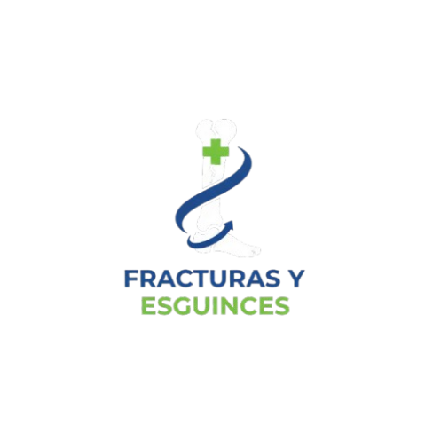

Sobre Nuestra Especialidad
El área de Traumatología del Centro Médico Veris cuenta con profesionales altamente capacitados en diagnóstico, cirugía y rehabilitación músculo-esquelética.

Quito Sur
Dirección: Av. Amazonas N34-120 y Av. Maldonado
Teléfono: (02) 399-1234
Horario: Lun-Vie 08:00 - 18:00, Sáb 09:00 - 13:00
Servicios: Consultas, Cirugía ambulatoria, Rehabilitación
Ubícanos
Quito Norte
Dirección: Av. Gaspar de Villarroel y Av. Eloy Alfaro
Teléfono: (02) 399-5678
Horario: Lun-Vie 07:30 - 19:00, Sáb 08:30 - 14:00
Servicios: Traumatología, Radiología, Guardia 24h
Ubícanos
Valle de los Chillos
Dirección: Av. Principal Valle de los Chillos km 2.5
Teléfono: (02) 399-9012
Horario: Lun-Vie 08:00 - 17:00, Dom y Feriados cerrado
Servicios: Consultas pediátricas, Rehabilitación, Terapias físicas
Ubícanos